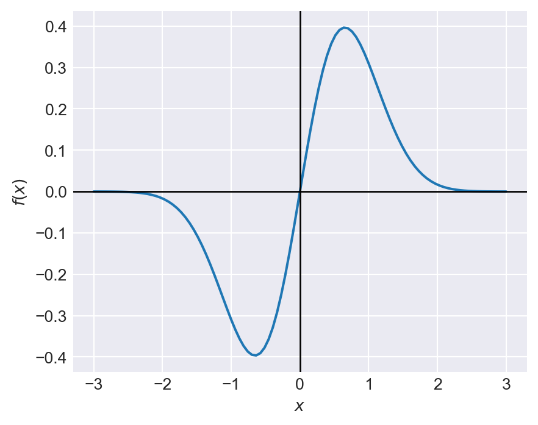
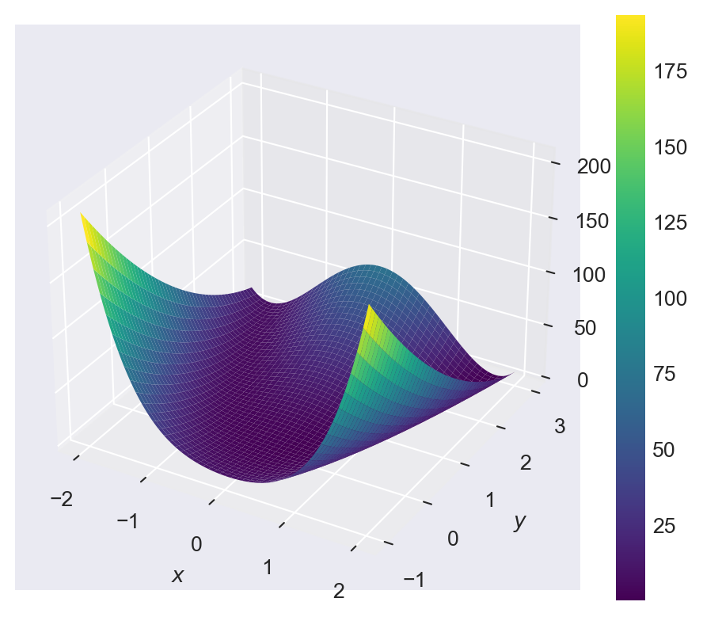
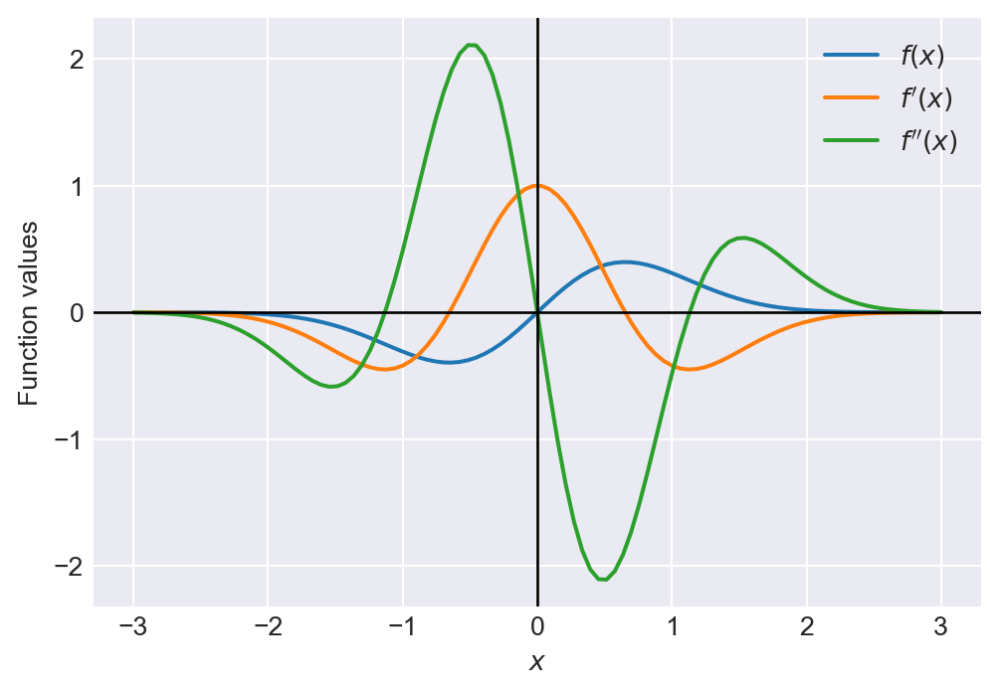

import numpy as np
import scipy.stats as stats
import scipy.optimize as optimize
import pandas as pd
import matplotlib.pyplot as plt
from matplotlib import cm
import sympy as sp
sp.init_printing() # For pretty printing of symbolic expressions
plt.style.use('seaborn-v0_8-darkgrid')9 Symbolic Computing
9.1 Introduction
In symbolic operations, mathematical computations are carried out analytically using symbols and expressions rather than numerical values. Symbolic computation provides exact results because it relies on the exact representation of mathematical symbols. The main module in Python for symbolic computation is the sympy package, which offers a wide range of functions for symbolic computing.
In this chapter, we illustrate some of the key features of the SymPy package. We first describe how to declare symbols and functions, and then demonstrate basic operations such as simplification, expansion, factorization, substitution, and evaluation. We also cover calculus operations such as differentiation, integration, and limits. Finally, we discuss linear algebra operations using symbolic matrices.
9.2 Declaration of symbols
We first need to translate mathematical symbols into Python objects. This is done using the symbols function in the SymPy package. In the following example, we declare three symbols x, y, and z:
x, y, z = sp.symbols('x, y, z')We then use these symbols to define mathematical expressions. For example, we can define the expression \(x^2 + 2xy + y^2\) as follows:
expr = x**2 + 2*x*y + y**2
expr\(\displaystyle x^{2} + 2 x y + y^{2}\)
The object expr is a symbolic expression because it is defined in terms of the symbols x and y. In SymPy, the sp.Expr class is used to represent symbolic expressions. We can check whether expr is an instance of the sp.Expr class using the isinstance function:
isinstance(expr, sp.Expr)
type(expr)Truesympy.core.add.AddNote that the type of expr is Add, which is a subclass of Expr that represents a sum of terms. In the following diagram, we illustrate the class hierarchy of symbolic expressions in SymPy.
Basic # the root of all SymPy objects
├── Expr # base class for symbolic expressions
│ ├── Symbol # variables (x, y, z, ...)
│ ├── Number # numbers (Integer, Rational, Float, π, e, ...)
│ ├── Add # sums (x + y)
│ ├── Mul # products (x*y, 2*x)
│ ├── Pow # powers (x**2)
│ ├── Function # functions (sin, exp, log, ...)
│ └── ... (many more)
│
├── Boolean # base class for logic
│ ├── And, Or, Not, ... # logical operators
│ └── BooleanTrue/False # logical truth values
│
├── Relational # equations/inequalities
│ ├── Eq, Ne # equal, not equal
│ ├── Lt, Gt, Le, Ge # <, >, ≤, ≥
│
└── Assumptions # assumption systemWe can use the free_symbols attribute to get the set of symbols that appear in a symbolic expression. For example, we can get the symbols that appear in the expression expr as follows:
expr.free_symbols\(\displaystyle \left\{x, y\right\}\)
The symbols function also allows us to assign specific properties known as assumptions to the symbols. For example, we can declare a symbol to be an integer or a positive real number:
n = sp.symbols('n', integer=True)
a = sp.symbols('a', positive=True)
b = sp.symbols('b', real=True)In Table 9.1, we provide commonly used assumptions for the symbols function. We can check these assumptions attached to the symbols by using the following attributes:
n.is_integer
a.is_positive
b.is_realTrueTrueTruesymbols function
| Assumption | Attribute | Description |
|---|---|---|
| real, imaginary | is_real, is_imaginary | The symbol represents a real or imaginary number. |
| positive, negative | is_positive, is_negative | The symbol is positive or negative. |
| integer | is_integer | The symbol represents an integer. |
| rational | is_rational | The symbol represents a rational number. |
The logical operations (And, Or, and Not) and relational operators can be used to create logical expressions. Consider the following examples:
x, y, z = sp.symbols('x, y, z')
expr1 = sp.And(x > 0, y < 0) # Logical AND
expr1\(\displaystyle x > 0 \wedge y < 0\)
expr2 = sp.Or(x > 0, y < 0) # Logical OR
expr2\(\displaystyle x > 0 \vee y < 0\)
expr3 = sp.Not(x > z) # Logical NOT
expr3\(\displaystyle x \leq z\)
(x > y) & (y > 0) # Another way to create a logical AND expression
(x > y) | (y > 0) # Another way to create a logical OR expression
~(x > y) # Another way to create a logical NOT expression\(\displaystyle x > y \wedge y > 0\)
\(\displaystyle x > y \vee y > 0\)
\(\displaystyle x \leq y\)
Finally, in Table 9.2, we provide some commonly used mathematical symbols in the SymPy package.
| Symbol | Description |
|---|---|
pi |
Pi |
E |
Euler’s number (e) |
I |
Imaginary unit (i) |
oo |
Infinity (∞) |
nan |
Not a number (NaN) |
true |
Boolean true |
false |
Boolean false |
EmptySet |
Empty set |
9.3 Functions
We can create symbolic functions using the Function class in the SymPy package. The syntax for this class is as follows:
# Create symbolic functions
f = sp.Function('f')
g = sp.Function('g')
h = sp.Function('h')# Check the type of the function
type(f)sympy.core.function.UndefinedFunctionNote that the type of f is UndefinedFunction, which means that it is a symbolic function without a specific definition. Once we have created a symbolic function, we can use it to define mathematical expressions. For example, we can define the expression \(f(x) + g(y) + h(z)\) as follows:
x,y,z = sp.symbols('x, y, z')
expr = f(x) + g(y) + h(z)
expr\(\displaystyle f{\left(x \right)} + g{\left(y \right)} + h{\left(z \right)}\)
The SymPy package also have some in-built mathematical functions, such as sin, cos, exp, and log. We can use these functions to define mathematical expressions. For example, we can define the expression \(\sin(x) + \cos(y) + e^z\) as follows:
expr = sp.sin(x) + sp.cos(y) + sp.exp(z)
expr\(\displaystyle e^{z} + \sin{\left(x \right)} + \cos{\left(y \right)}\)
In the following table, we provide some commonly used mathematical functions from the SymPy package.
| Function | Description |
|---|---|
sin(x) |
Sine function |
cos(x) |
Cosine function |
tan(x) |
Tangent function |
exp(x) |
Exponential function |
log(x) |
Natural logarithm |
sqrt(x) |
Square root |
abs(x) |
Absolute value |
factorial(n) |
Factorial |
gamma(n) |
Gamma function |
The anonymous function Lambda can also be used to create symbolic functions. Consider the following examples:
# Create symbolic lambda functions
f = sp.Lambda(x, x**2)
f
g = sp.Lambda(y, sp.sin(y))
g
h = sp.Lambda(z, sp.exp(z))
h\(\displaystyle \left( x \mapsto x^{2} \right)\)
\(\displaystyle \left( y \mapsto \sin{\left(y \right)} \right)\)
\(\displaystyle \left( z \mapsto e^{z} \right)\)
# Check the type of the function
type(f)sympy.core.function.Lambda# Evaluate the lambda functions
f(2), g(sp.pi/2), h(0)\(\displaystyle \left( 4, \ 1, \ 1\right)\)
# Use the lambda functions in expressions
x=sp.symbols('x')
y=sp.symbols('y')
z=sp.symbols('z')
expr = f(z) + g(x) + h(y)
expr\(\displaystyle z^{2} + e^{y} + \sin{\left(x \right)}\)
9.4 Basic operations
Once we have defined mathematical expressions using symbols and functions, we can perform various operations on them. Some of the basic operations include simplification, expansion, factorization, substitution, and evaluation.
The simplify function can be used to simplify mathematical expressions. For example, we can simplify the expression \(x^2 + 2xy + y^2\) as follows:
x, y = sp.symbols('x, y')
expr = 2 * (x**2 - x) - x * (x + 1)+y*(y-2)+1
expr
sp.simplify(expr)\(\displaystyle 2 x^{2} - x \left(x + 1\right) - 2 x + y \left(y - 2\right) + 1\)
\(\displaystyle x^{2} - 3 x + y^{2} - 2 y + 1\)
The expand function can be used to expand mathematical expressions. Consider the following examples:
x, y = sp.symbols('x, y')
expr1 = (x + y)**3
sp.expand(expr1)\(\displaystyle x^{3} + 3 x^{2} y + 3 x y^{2} + y^{3}\)
expr2 = (x + 2) * (x - 3)
sp.expand(expr2)\(\displaystyle x^{2} - x - 6\)
expr3 = sp.sin(x + y)
sp.expand(expr3, trig=True)\(\displaystyle \sin{\left(x \right)} \cos{\left(y \right)} + \sin{\left(y \right)} \cos{\left(x \right)}\)
x, y = sp.symbols('x, y', positive=True)
expr4 = sp.log(x * y)
sp.expand(expr4, log=True)\(\displaystyle \log{\left(x \right)} + \log{\left(y \right)}\)
We can use the factor, collect, and combine functions to factor mathematical expressions. Consider the following examples:
x, y = sp.symbols('x, y')
expr1 = x**2 - y**2
sp.factor(expr1)\(\displaystyle \left(x - y\right) \left(x + y\right)\)
expr2 = x**3 + 3*x**2*y + 3*x*y**2 + y**3
sp.factor(expr2)\(\displaystyle \left(x + y\right)^{3}\)
expr3 = x**2*y + 2*y + y*x
sp.collect(expr3, y)\(\displaystyle y \left(x^{2} + x + 2\right)\)
x, y = sp.symbols('x, y', positive=True)
expr6 = sp.log(x) - sp.log(y)
sp.logcombine(expr6)\(\displaystyle \log{\left(\frac{x}{y} \right)}\)
To evaluate an expression at specific values of the symbols, we can use the subs function. For example, we can evaluate the expression \(x^2 + 2xy + y^2\) at \(x=1\) and \(y=2\) as follows:
x, y = sp.symbols('x, y')
expr = x**2 + 2*x*y + y**2
expr.subs({x: 1, y: 2})\(\displaystyle 9\)
The N and evalf methods can be used to evaluate mathematical expressions numerically. Consider the following examples:
sp.sqrt(2).evalf()
sp.N(sp.sqrt(2), 10) # 10 decimal places\(\displaystyle 1.4142135623731\)
\(\displaystyle 1.414213562\)
x = sp.symbols('x')
expr = sp.sin(x) / x
expr.evalf(subs={x: 0.1}, n=10) # Evaluate at x=0.1 with 10 decimal places
expr.evalf(subs={x: 1}, n=10) # Evaluate at x=1 with 10 decimal places\(\displaystyle 0.9983341665\)
\(\displaystyle 0.8414709848\)
# Evaluate a list of expressions
exprs = [sp.sqrt(2), sp.pi, sp.E]
results = [expr.evalf() for expr in exprs]
results # List of evaluated results\(\displaystyle \left[ 1.4142135623731, \ 3.14159265358979, \ 2.71828182845905\right]\)
To convert a symbolic expression/function to a regular Python function that can be evaluated for different values of the variables, we can use the lambdify function. The syntax for this function is as follows:
sp.lambdify(variables, expression, modules)Here, variables is a list of symbols that appear in the expression, expression is the symbolic expression to be converted, and modules specifies the numerical library to be used for the evaluation (e.g., 'numpy', 'scipy', or 'math').
In the following example, we convert the symbolic function \(f(x) = \sin(x) e^{-x^2}\) to a regular Python function that can be evaluated for different values of \(x\).
x, y = sp.symbols('x, y')
f = sp.sin(x) * sp.exp(-x**2)
f_num = sp.lambdify(x, f, 'numpy')
f_num(0.5) # Evaluate the numerical function at x=0.5\(\displaystyle 0.373376984889383\)
Using f_num, we can also use Matplotlib to plot the function over a specified range of \(x\) values.
# Plot the function f(x) = sin(x) * exp(-x^2) using Matplotlib
x_vals = np.linspace(-3, 3, 100)
y_vals = f_num(x_vals)
plt.figure(figsize=(5, 4))
plt.plot(x_vals, y_vals)
# plt.title('Plot of the function $f(x) = \sin(x) e^{-x^2}$')
plt.xlabel('$x$')
plt.ylabel('$f(x)$')
# Add horizontal and vertical lines at y=0 and x=0
plt.axhline(0, color='black', lw=1, ls='-')
plt.axvline(0, color='black', lw=1, ls='-')
plt.show()
In the following example, we consider the Rosenbrock function, which is a common test problem for optimization algorithms:
# Rosenbrock function
# f(x, y) = (a - x)^2 + b(y - x^2)^2
x, y = sp.symbols('x, y')
f = (a - x)**2 + b*(y - x**2)**2
f\(\displaystyle b \left(- x^{2} + y\right)^{2} + \left(a - x\right)^{2}\)
Let \(a=1\) and \(b=8\). In the following example, we convert the symbolic Rosenbrock function to a regular Python function using lambdify, and then use Matplotlib to create a surface plot of the function over a specified range of \(x\) and \(y\) values.
# Surface plot of the Rosenbrock function
# Define symbols and function
x, y = sp.symbols('x, y')
a, b = 1, 8
f = (a - x)**2 + b*(y - x**2)**2
# Convert to numeric
f_num = sp.lambdify((x, y), f, 'numpy')
# Define the range
x_vals = np.linspace(-2, 2, 400)
y_vals = np.linspace(-1, 3, 400)
X, Y = np.meshgrid(x_vals, y_vals)
Z = f_num(X, Y)
# Create surface plot
fig = plt.figure(figsize=(6, 5))
ax = fig.add_subplot(111, projection='3d')
surf = ax.plot_surface(X, Y, Z, cmap='viridis')
# Labels
ax.set_xlabel('$x$')
ax.set_ylabel('$y$')
ax.set_zlabel('$f(x, y)$')
# Colorbar
fig.colorbar(surf, ax=ax)
plt.show()
9.5 Calculus
9.5.1 Derivatives
The diff function can be used to compute the derivative of a mathematical expression. Consider the following examples:
expr = x**3 + 3*x**2 + 3*x + 1
expr
sp.diff(expr, x, 1) # First derivative with respect to x
# expr.diff(x, 1) # Another way to compute the first derivative\(\displaystyle x^{3} + 3 x^{2} + 3 x + 1\)
\(\displaystyle 3 x^{2} + 6 x + 3\)
expr = x**3 + 3*x**2 + 3*x + 1
expr
sp.diff(expr, x, 2) # Second derivative with respect to x
# expr.diff(x, 2) # Another way to compute the second derivative\(\displaystyle x^{3} + 3 x^{2} + 3 x + 1\)
\(\displaystyle 6 \left(x + 1\right)\)
x, y = sp.symbols('x, y')
expr = x**2 * y + y**2 * x
expr
sp.diff(expr, x) # Partial derivative with respect to x
# sp.diff(expr, y) # Partial derivative with respect to y\(\displaystyle x^{2} y + x y^{2}\)
\(\displaystyle 2 x y + y^{2}\)
x, y = sp.symbols('x, y')
expr = x**2 * y + y**2 * x
expr
sp.diff(expr, x, y) # Mixed partial derivative\(\displaystyle x^{2} y + x y^{2}\)
\(\displaystyle 2 \left(x + y\right)\)
In the following example, we plot the first and second derivatives of the function \(f(x) = \sin(x) e^{-x^2}\) using Matplotlib. We first compute the symbolic derivatives using the diff function, then convert them to numerical functions using lambdify, and finally use Matplotlib to plot the original function and its derivatives over a specified range of \(x\) values.
# Define the symbolic function and its derivatives
x = sp.symbols('x')
f = sp.sin(x) * sp.exp(-x**2)
f_prime = sp.diff(f, x)
f_prime
f_double_prime = sp.diff(f_prime, x)
f_double_prime\(\displaystyle - 2 x e^{- x^{2}} \sin{\left(x \right)} + e^{- x^{2}} \cos{\left(x \right)}\)
\(\displaystyle 4 x^{2} e^{- x^{2}} \sin{\left(x \right)} - 4 x e^{- x^{2}} \cos{\left(x \right)} - 3 e^{- x^{2}} \sin{\left(x \right)}\)
# Convert symbolic functions to numerical functions
f_num = sp.lambdify(x, f, 'numpy')
f_prime_num = sp.lambdify(x, f_prime, 'numpy')
f_double_prime_num = sp.lambdify(x, f_double_prime, 'numpy')
# Define the range of x values
x_vals = np.linspace(-3, 3, 100)
# Evaluate the functions at the x values
y_vals = f_num(x_vals)
y_prime_vals = f_prime_num(x_vals)
y_double_prime_vals = f_double_prime_num(x_vals)
# Plot the functions
plt.figure(figsize=(6, 4))
plt.plot(x_vals, y_vals, label='$f(x)$')
plt.plot(x_vals, y_prime_vals, label="$f'(x)$")
plt.plot(x_vals, y_double_prime_vals, label="$f''(x)$")
# plt.title('Plot of the function $f(x)$ and its derivatives')
plt.xlabel('$x$')
plt.ylabel('Function values')
plt.axhline(0, color='black', lw=1, ls='-')
plt.axvline(0, color='black', lw=1, ls='-')
plt.legend()
plt.show()
9.5.2 Integrals
The integrate function can be used to compute the integral of a mathematical expression. Consider the following examples:
x = sp.symbols('x')
expr = x**2 + 2*x + 1
sp.integrate(expr, x) # Indefinite integral with respect to x
# expr.integrate(x) # Another way to compute the indefinite integral\(\displaystyle \frac{x^{3}}{3} + x^{2} + x\)
x = sp.symbols('x')
expr = x**2 + 2*x + 1
sp.integrate(expr, (x, 0, 1)) # Definite integral from 0 to 1
# expr.integrate((x, 0, 1)) # Another way to compute the definite integral\(\displaystyle \frac{7}{3}\)
x, y = sp.symbols('x, y')
expr = x * y + y**2
sp.integrate(expr, x) # Indefinite integral with respect to x
# sp.integrate(expr, y) # Indefinite integral with respect to y\(\displaystyle \frac{x^{2} y}{2} + x y^{2}\)
x, y = sp.symbols('x, y')
expr = x * y + y**2
sp.integrate(expr, (x, 0, 1)) # Definite integral with respect to x from 0 to 1
# sp.integrate(expr, (y, 0, 1)) # Definite integral with respect to y from 0 to 1\(\displaystyle y^{2} + \frac{y}{2}\)
# Gaussian integral
x = sp.symbols('x')
expr = sp.exp(-x**2/2)
sp.integrate(expr, (x, -sp.oo, sp.oo)) # Definite integral from -infinity to infinity
# expr.integrate((x, -sp.oo, sp.oo)) # Another way to compute the definite integral\(\displaystyle \sqrt{2} \sqrt{\pi}\)
9.5.3 Limits
The limit function can be used to compute the limit of a mathematical expression. Consider the following examples:
x = sp.symbols('x')
expr = (x**2 - 1) / (x - 1)
sp.limit(expr, x, 1) # Limit as x approaches 1
# expr.limit(x, 1) # Another way to compute the limit\(\displaystyle 2\)
x = sp.symbols('x')
expr = sp.sin(x) / x
sp.limit(expr, x, 0) # Limit as x approaches 0
# expr.limit(x, 0) # Another way to compute the limit\(\displaystyle 1\)
9.5.4 Solving algebraic equations
We can use the solve function to find the values of one variable that satisfy the equation. Consider the following example:
# Define symbols
a, b, x, y, z = sp.symbols('a b x y z')
# Define equation
S = x**2 - x - 6
# Solve the equation
k = sp.solve(S, x)
print(k)[-2, 3]# Define symbols
t, h, g = sp.symbols('t h g')
# Define equation
eq = 4*t*h**2 + 20*t - 5*g
# Solve for g
gs = sp.solve(eq, g)
gs\(\displaystyle \left[ \frac{4 t \left(h^{2} + 5\right)}{5}\right]\)
If there are multiple equations, we can pass a list of equations to the solve function. Consider the following example:
# Define symbols
x, y, t = sp.symbols('x y t')
# Define equations
eq1 = 10*x + 12*y + 16*t
eq2 = 5*x - y - 13*t # move everything to LHS
# Solve the system for x and y
sol = sp.solve([eq1, eq2], (x, y))
print(sol){x: 2*t, y: -3*t}9.5.5 Ordinary differential equations (ODEs)
Assume that \(y\) is the dependent variable and \(t\) is the independent variable. Then, the first order ODE can be written as: \[ \frac{dy}{dt} = f(t, y). \]
The second order ODE can be written as: \[ \frac{d^2y}{dt^2} = f(t, y, \frac{dy}{dt}). \]
The solution of an ODE is a function \(y(t)\) that satisfies the equation. The dsolve function can be used to solve ordinary differential equations (ODEs). Consider the following examples:
# Define symbols
t = sp.symbols('t')
y = sp.Function('y')(t)
# Define ODE
ode1 = sp.Eq(y.diff(t), y)
ode1\(\displaystyle \frac{d}{d t} y{\left(t \right)} = y{\left(t \right)}\)
# Solve ODE
sol = sp.dsolve(ode1, y)
sol\(\displaystyle y{\left(t \right)} = C_{1} e^{t}\)
# Define the function y(t) and the variable t
t = sp.symbols('t')
y = sp.Function('y')(t)
# Define the differential equation
ode2 = sp.Eq(y.diff(t, 2) + 2*y.diff(t) + y, 0)
ode2\(\displaystyle y{\left(t \right)} + 2 \frac{d}{d t} y{\left(t \right)} + \frac{d^{2}}{d t^{2}} y{\left(t \right)} = 0\)
# Solve the differential equation
sol = sp.dsolve(ode2, y)
sol\(\displaystyle y{\left(t \right)} = \left(C_{1} + C_{2} t\right) e^{- t}\)
If the boundary/initial conditions are provided, we can use the ics argument to specify them. In the following example, we consider the following first order ODE with an initial condition: \[
\frac{dy}{dt} + 4y = 60, \quad y(0) = 5.
\]
# Define the variable and function
t = sp.symbols('t')
y = sp.Function('y')(t)
# Define the differential equation
ode3 = sp.Eq(y.diff(t) + 4*y, 60)
ode3\(\displaystyle 4 y{\left(t \right)} + \frac{d}{d t} y{\left(t \right)} = 60\)
# Solve with initial condition y(0) = 5
sol = sp.dsolve(ode3, y, ics={y.subs(t, 0): 5})
sol\(\displaystyle y{\left(t \right)} = 15 - 10 e^{- 4 t}\)
In the following example, we consider the following second order ODE with initial conditions: \[ \frac{d^2y}{dt^2} - 2\frac{dy}{dt} + 2y = 0, \quad y(0) = 1, \quad \frac{dy}{dt}(0) = 0. \]
# Define variable and function
t = sp.symbols('t')
y = sp.Function('y')(t)
# Define the differential equation
ode4 = sp.Eq(y.diff(t, 2) - 2*y.diff(t) + 2*y, 0)
ode4\(\displaystyle 2 y{\left(t \right)} - 2 \frac{d}{d t} y{\left(t \right)} + \frac{d^{2}}{d t^{2}} y{\left(t \right)} = 0\)
# Solve with initial conditions y(0)=1 and Dy(0)=0
sol = sp.dsolve(ode4, y, ics={y.subs(t, 0): 1, y.diff(t).subs(t, 0): 0})
sol\(\displaystyle y{\left(t \right)} = \left(- \sin{\left(t \right)} + \cos{\left(t \right)}\right) e^{t}\)
9.6 Linear algebra
The SymPy package provides various functions for performing linear algebra operations. Consider the following examples:
A = sp.Matrix([[1, 2], [3, 4]])
B = sp.Matrix([[5, 6], [7, 8]])
C = A + B # Matrix addition
C
D = A * B # Matrix multiplication
D\(\displaystyle \left[\begin{matrix}6 & 8\\10 & 12\end{matrix}\right]\)
\(\displaystyle \left[\begin{matrix}19 & 22\\43 & 50\end{matrix}\right]\)
A = sp.Matrix([[1, 2], [3, 4]])
A_inv = A.inv() # Matrix inversion
A_inv\(\displaystyle \left[\begin{matrix}-2 & 1\\\frac{3}{2} & - \frac{1}{2}\end{matrix}\right]\)
A = sp.Matrix([[1, 2], [3, 4]])
det_A = A.det() # Determinant
det_A\(\displaystyle -2\)
A = sp.Matrix([[1, 2], [3, 4]])
eigenvals = A.eigenvals() # Eigenvalues
eigenvals
eigenvects = A.eigenvects() # Eigenvectors
eigenvects\(\displaystyle \left\{ \frac{5}{2} - \frac{\sqrt{33}}{2} : 1, \ \frac{5}{2} + \frac{\sqrt{33}}{2} : 1\right\}\)
\(\displaystyle \left[ \left( \frac{5}{2} - \frac{\sqrt{33}}{2}, \ 1, \ \left[ \left[\begin{matrix}- \frac{\sqrt{33}}{6} - \frac{1}{2}\\1\end{matrix}\right]\right]\right), \ \left( \frac{5}{2} + \frac{\sqrt{33}}{2}, \ 1, \ \left[ \left[\begin{matrix}- \frac{1}{2} + \frac{\sqrt{33}}{6}\\1\end{matrix}\right]\right]\right)\right]\)
A = sp.Matrix([[1, 2], [2, 4]])
rank_A = A.rank() # Rank
rank_A\(\displaystyle 1\)
In the following table, we provide some commonly used linear algebra functions from the SymPy package.
| Function/Method | Description |
|---|---|
A + B |
Matrix addition |
A * B |
Matrix multiplication |
Inv/A.inv() |
Matrix inversion |
Det/A.det() |
Determinant |
A.eigenvals() |
Eigenvalues |
A.eigenvects() |
Eigenvectors |
Rank/A.rank() |
Rank |
transpose/A.T |
Transpose |
Trace/A.trace() |
Trace of the matrix |
Norm/A.norm() |
Norm of the matrix |
9.7 Further reading
For more information on symbolic computation using the SymPy package, we recommend the following resources:
- SymPy Documentation,
- SymPy Tutorial, and
- Chapter 3: Symbolic Computing in Johansson (2024).